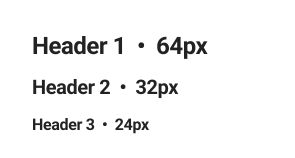

Yoga @
Design system
The Yoga platform serves three main user categories: customers using the B2C portal, intermediaries managing policies and client portfolios through the B2B portal, and company admins who manage and configure the products available for sale and purchase.
For each category, a custom design system has been built to meet the specific needs of the users interacting with the respective product, keeping everything clean, well-organized, and easily accessible.
For each category, a custom design system has been built to meet the specific needs of the users interacting with the respective product, keeping everything clean, well-organized, and easily accessible.
Methodology
In developing the three design systems, I employed the Atomic Design methodology. This approach breaks down the user interface into its fundamental building blocks: atoms, molecules, organisms, templates, and pages. This systematic method ensured a consistent and scalable design system tailored to the specific needs of each user category.
Atoms
Typography

Colors
Icons
Spacing